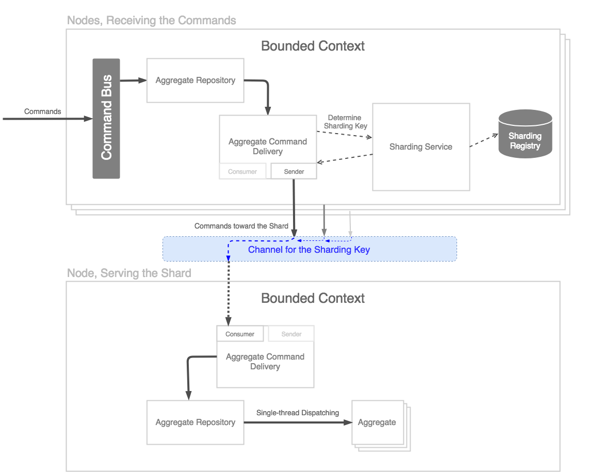

@CheckReturnValue @ParametersAreNonnullByDefault
See: Description
| Interface | Description |
|---|---|
| Shardable |
A contract for all message destinations, which require the messages sent to them
to be grouped and processed in shards.
|
| ShardedStreamConsumer<I,E extends io.spine.core.MessageEnvelope<?,?,?>> |
The consumer of the sharded messages of a certain type.
|
| Sharding |
The service responsible for orchestrating the shardables and their inbound streams of messages.
|
| ShardingStrategy |
The strategy of splitting the message targets into shards.
|
| Class | Description |
|---|---|
| CommandShardedStream<I> |
The stream of commands sent to a specific shard.
|
| CommandShardedStream.Builder<I> |
The builder for the
CommandShardedStream instances. |
| Consumer<I,E extends Entity<I,?>,M extends io.spine.core.ActorMessageEnvelope<?,?,?>,S extends ShardedStream<I,?,M>,B extends ShardedStream.AbstractBuilder<I,M,B,S>> |
The consuming part of the Delivery.
|
| DeliveryTag |
A value, that defines the message destination in the delivery process.
|
| EventShardedStream<I> |
The stream of events sent to a specific shard.
|
| EventShardedStream.Builder<I> |
The builder for the
EventShardedStream instances. |
| InProcessSharding |
An implementation of the sharding service, that manages all the data in-memory and runs only
within the current JVM process.
|
| Sender<I,M extends io.spine.core.ActorMessageEnvelope<?,?,?>> |
The sending part of the Delivery.
|
| ShardedStream<I,M extends com.google.protobuf.Message,E extends io.spine.core.MessageEnvelope<?,M,?>> |
The stream of messages of a particular type sent for the processing to a specific shard.
|
| ShardedStream.AbstractBuilder<I,E extends io.spine.core.MessageEnvelope<?,?,?>,B extends ShardedStream.AbstractBuilder<I,?,B,S>,S extends ShardedStream<I,?,?>> |
An abstract base for builders of the
ShardedStream descendants. |
| ShardingKey |
A key which defines the group of
Entity instances, which must be processed within
a single shard. |
| UniformAcrossTargets |
The strategy of splitting the entities into a number of shards uniformly.
|
Very often Spine-based applications are designed for Google Cloud deployment. In particular, an AppEngine automatic scaling feature is heavily utilized in order to achieve the best performance/cost ratio.
While such an approach requires zero maintenance of the computational nodes, some special
attention must be paid to the concurrent access to the data. The thing is that AppEngine
by default performs round-robin routing of the requests sent to nodes. So that write-side nodes
may be updating the same Aggregate instances at the same moment.
Similar issues occur when studying the event delivery from the write-side to read-side.
The same instances of Projections must be updated in a synchronous and exclusive fashion.
Otherwise their state is going to be broken.
Aggregates, ProcessManagers and Projections are grouped into shards.
A shard is virtual group of entities of the same entity class (e.g. a group of
certain Projection instances). In scope of a shard all the entities should
be processed synchronously, in a single thread per shard.
So if an Aggregate declares commands to handle, events and rejections to react on,
they should all be processed synchronously for a certain Aggregate instance.
The events produced in each command handler and event/rejection reactors
should be applied in the same thread as well. Such a synchronous entity processing allows to
prevent the concurrent modification of the entity state.
The delivery strategies of each of the entity repositories are used to reroute and regroup the messages sent for dispatching, and then dispatch those to the instances per-shard.
 Command flow. Events and Rejections are dispatched similarly.
In this flow the message channel serves as a single-lane road, enqueuing the messages from multiple senders (potentially, posting their messages simultaneously) and transferring them to a single window on a receiving side.
A ShardedStream is introduced as a convenience wrapper over channels, used to exchange the messages to each of the shards.
By default each repository defines a number of shards equal to 1, so all the entities
of the repository belong to a single shard.
To define a custom sharding strategy for the entity repository one should override the
getShardingStrategy().
One of the possible values to return is a
UniformAcrossTargets-produced value:
public static class TripleShardProjectRepository
extends AggregateRepository<ProjectId, DeliveryProject> {
public TripleShardProjectRepository() {
super();
getRejectionRouting().replaceDefault(routeByProjectId());
}
{@literal @}Override
public ShardingStrategy getShardingStrategy() {
return UniformAcrossTargets.forNumber(3);
}
}
In the example above the entities will be split into three shards by a their
getId().hashCode() % 3 value. While such an approach is hard to call a truly uniform,
as the nature of identifiers is completely different from domain to domain, it seems to be good
enough for many typical cases.
However, it's extremely important to remember that the transport implementation means a lot. The provided out-of-the-box in-process implementation is naïve and should be replaced with something playing well with the underlying infrastructure.
A JVM-wide Sharding service is introduced. Its
implementation is exposed via ServerEnvironment and is
used to integrate the transport factory, register new shards and define which shards
are served within the current JVM.
AggregateRepository, ProcessManagerRepository and ProjectionRepository
become shardable by implementing the Shardable interface.
Each Shardable defines the total number of shards and the way to tell the shard
by the entity ID.
Each Shardable defines a number of message consumers, each devoted to consuming
messages of a certain kind (e.g. Command). A special
ShardedStreamConsumer interface is
introduced for this matter. The consumers are used to receive the messages, sent to a specific
shard. To specify the type of messages and the type of the entity to which messages are headed,
a DeliveryTag must be defined for the each consumer.
The Delivery is split into sending and
consuming parts, each communicating with
the transport layer. The consuming part of a Delivery is a ShardedStreamConsumer
implementation.
An internal ShardingRegistry is used
to hold all the known consumers and their streams. Its instance belongs to the Sharding
service and is JVM-wide as well.